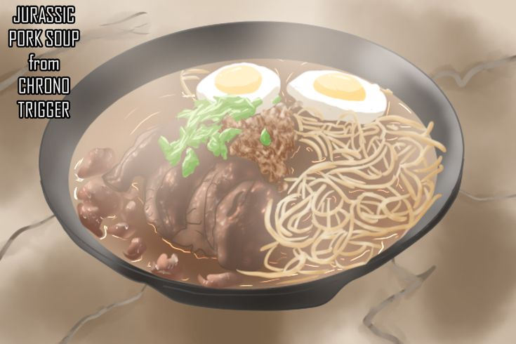

Jurassic Pork Soup

Description
Saimin is the Hawaiian version of ramen (with other Asian influences). There are a ton of saiman eating contests, so this seemed super appropriate. This is a take on pork saimin complimented by a "dinosaur egg" topping.
Ingredients:
- 1 lb Pork Shoulder
- Salt and Pepper (to taste)
- 1 cup Char Siu Sauce
- 1 Yellow Onion, chopped
- 4 cloves of Garlic, minced
- 1/2 inch piece fresh ginger, peeled and chopped
- 2,5 cups low-sodium chicken broth
- 1 leek, halved lengthwise and coarsely chopped
- 1 cup Baby Bok Choy
- 1/2 cup Cremini Mushrooms
- Low-sodium soy Sauce
- 3/4 lb fresh Saiman or Ramen noodles
- 2 large Eggs, medium-boiled
- 1 Green Onion, chopped
- Sesam and/ore chile oil
Suggested toppings:
- Togarashi
- Sliced Boiled Fish Cakes
- Furikake
- Chili Oil
- Bean Sprouts
- Nori Sheets
Directions:
- Season the pork with salt and pepper and place in a large plastic bag with 3/4 cups of char siu sauce. Let marinate for a couple hours
- Pre-heat oven to 400 degree F
- Place the pork piece on grill and with a layered baking tray on middle rack and bake for 10 minutes
- Remove the pork and brush with remaining sauce. Roast on middle track for another 10 minutes, then move the grill to up to the top rack and roast for another couple of minutes. Transfer out and let rest for 3-4 minutes, then cut the pork into slices and set aside. In a frying pan, add the yellow onion and sear, without stirring, until browned, about 5 minutes. Stir in the garlic, ginger, and a cup of the broth
- Deglaze the pan, stirring and scraping up any browned bits from the insert bottom, then let simmer for a couple minutes
- Transfer the contents of the pan to a dutch oven, add the leek, mushrooms, bok choy, and the remaining broth. Stir to combine
- Cover and simmer over low heat on the stove for about 30 minutes or until the bok choy is softened and flavors are mingled
- Season the broth to taste with soy sauce and sesame and/or chile oil. Continue to simmer for another 10 minutes
- Cook the noodles according to the package directions
- Divide the noodles evenly among individual bowls, then ladle the broth over the noodles, dividing evenly
- Arrange the pork slices on top of the noodles and sprinkle with the green onions and top each with two egg halves
- Add any additional toppings you like (suggestions above) and serve with a huge side of poi (if you want).